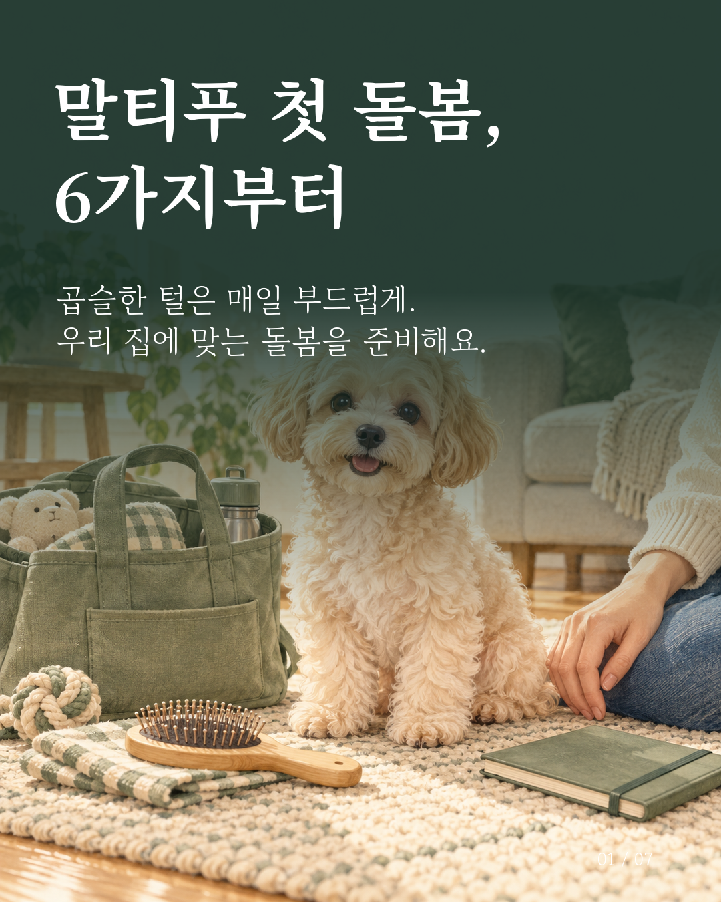
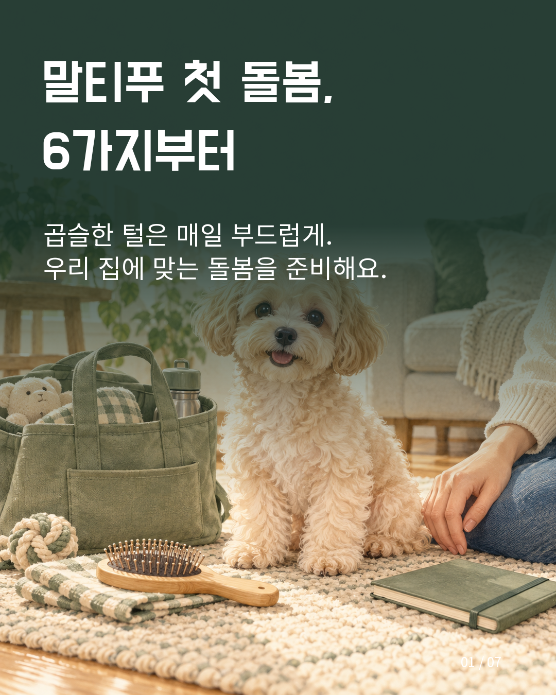
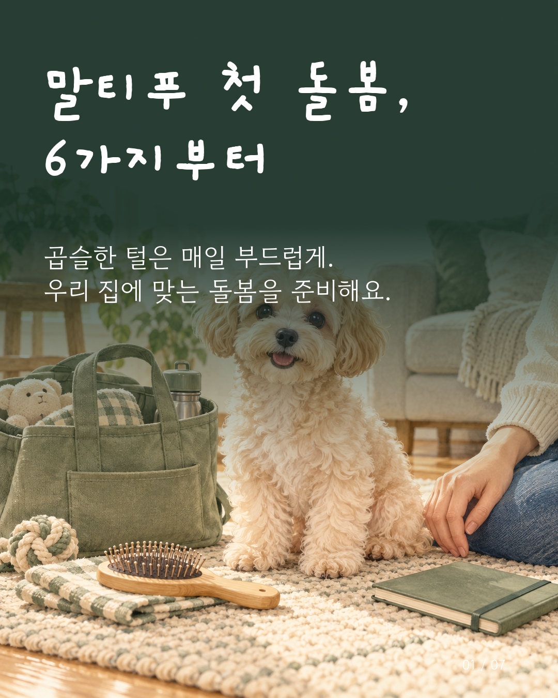

세리프 · 차분한 매거진

제목 Noto Serif KR 700 · 본문 고운바탕 400
명조 제목의 힘과 본문용 바탕의 차분한 읽기 리듬을 조합합니다.
공식 배포처: notoserifkr (OFL 원문) · gowunbatang (OFL 원문)
같은 원본 사진과 문구에 스타일별 서체·글자 크기·제목과 본문 간격을 적용했습니다. 작은 화면에서는 원본을 눌러 확인해 주세요.

명조 제목의 힘과 본문용 바탕의 차분한 읽기 리듬을 조합합니다.
공식 배포처: notoserifkr (OFL 원문) · gowunbatang (OFL 원문)

단단한 제목용 고딕과 중립적인 본문 고딕의 역할을 나눕니다.
공식 배포처: dohyeon (OFL 원문) · notosanskr (OFL 원문)

손글씨 제목에 손의 움직임이 느껴지는 고운돋움을 붙여 부드럽게 읽히게 합니다.
공식 배포처: gaegu (OFL 원문) · gowundodum (OFL 원문)
글꼴의 형태를 바꾸지 않고 공식 파일을 사용했습니다. 저작권·OFL 원문은 프로젝트 fonts 폴더에 보관합니다. 카드 이미지 제작과 폰트 파일 자체의 재배포 조건은 구분되며, 앱에 글꼴을 함께 배포할 때도 원문을 유지합니다.